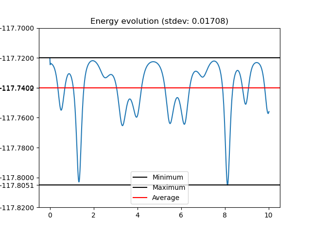

Baumgarte bar pendulum

Code used for this simulation
import pymech as pm
import numpy as np
import matplotlib.pyplot as plt
from math import sqrt
stiffness = 2
# ------------------------
# SIMULATION
# ------------------------
sim = pm.Simulation(gravity=9.81)
# Fixed anchor
m1 = pm.Particle(
mass=1.0,
pos=(0.0, 0.0),
vel=(0.0, 0.0),
fixed=True
)
m2 = pm.Particle(
mass=1.0,
pos=(2.0, 0.0),
vel=(0.0, 0.0),
fixed=True
)
m3 = pm.Particle(
mass=1.0,
pos=(3.0,-2.0),
vel=(0.0, 0.0)
)
m4 = pm.Particle(
mass=1.0,
pos=(5.0, -2.0),
vel=(0.0, 0.0)
)
m5 = pm.Particle(
mass=1.0,
pos=(4.0,-4.0),
vel=(0.0,0.0)
)
m6 = pm.Particle(
mass=1.0,
pos=(6.0, -4.0),
vel=(0.0,0.0)
)
# Connect rods
sim.addRod(pm.Rod(m1, m3, length=sqrt(3**2 + 2**2),stiffness=stiffness))
sim.addRod(pm.Rod(m2, m4, length=sqrt(3**2 + 2**2),stiffness=stiffness))
sim.addRod(pm.Rod(m3, m4, length=2,stiffness=stiffness))
sim.addRod(pm.Rod(m3, m5, length=sqrt(1**2 + 2**2),stiffness=stiffness))
sim.addRod(pm.Rod(m4, m6, length=sqrt(1**2 + 2**2),stiffness=stiffness))
sim.addRod(pm.Rod(m5, m6, length=2,stiffness=stiffness))
sim.addParticle(m1)
sim.addParticle(m2)
sim.addParticle(m3)
sim.addParticle(m4)
sim.addParticle(m5)
sim.addParticle(m6)
# ------------------------
# RUN
# ------------------------
states, energies = sim.run(
dt=0.016,
T=10,
debug=True,
trackEnergy=True,
method="Verlet"
)
# ------------------------
# VISUALIZE
# ------------------------
sim.visualize(states, 0.016, None, energies)
sim.energyPlot(0.016,energies)